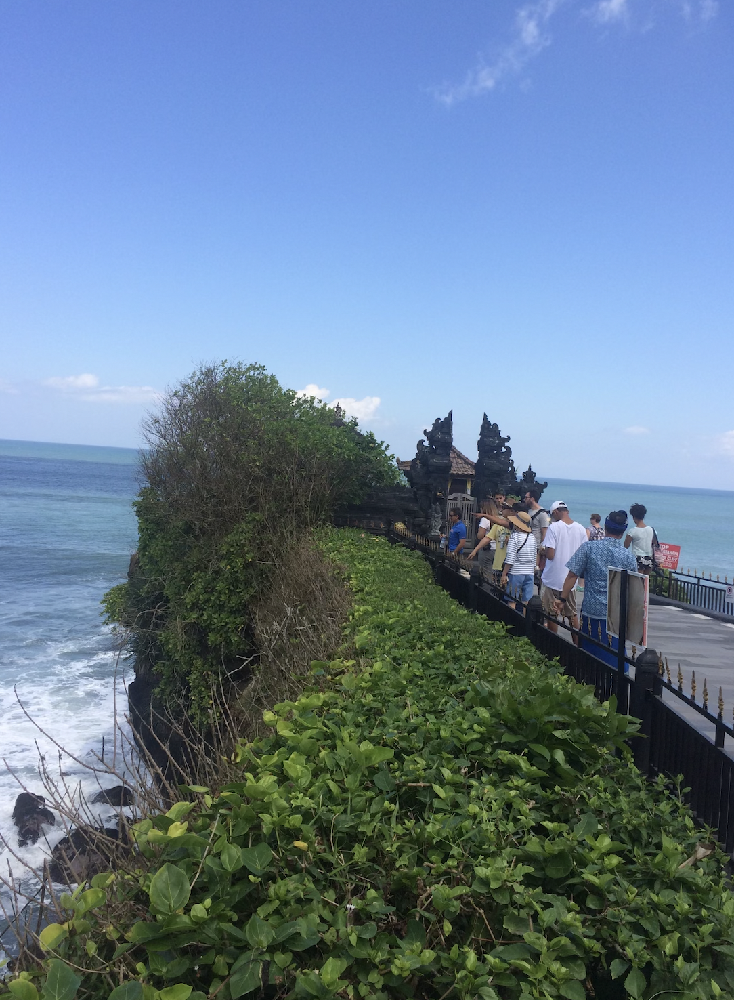
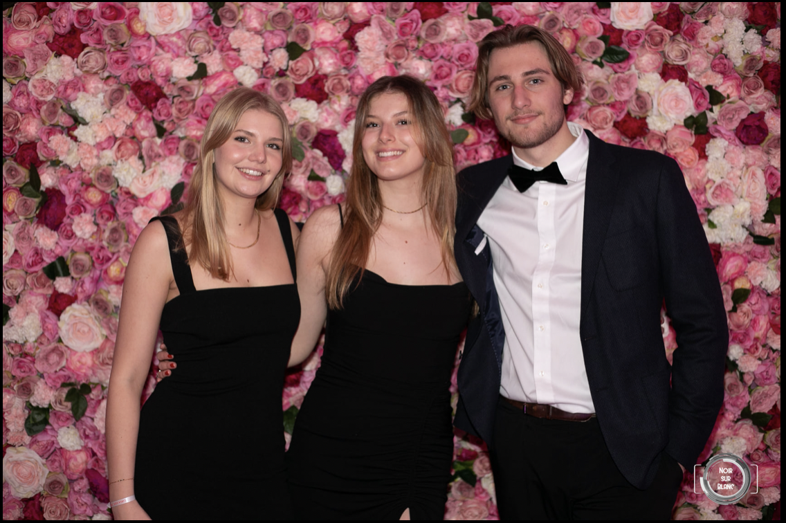

I'm currently a member of School&Co in ESSEC.
ESSEC School&CO which is a Charity association created to help children who don’t have access to school support form their parents.
I love travelling, discovering new cultures, meeting new people,etc. In my opinion, seeing the world is more educational than a high school or college class. When we travel, we have the possibility of learning a new language, a new cuisine, aspects of a different culture, or even acquiring a deeper appreciation of faith or spirituality.
I personally have travelled a lot with my family and friend, I had this chance to discover other culture, people and landscapes. I have been to Mexico, The United States, Bali and Mauritania for instance
It develops your personality Travelling also allows you to (re)discover yourself and is beneficial for your personal development. Self-confidence develops when you find yourself, for example, making decisions in unusual situations or managing to make yourself understood in an unknown language. You become more resourceful as soon as you leave your comfort zone. Expanding your horizons also means expanding your knowledge. You have a lot to learn from the countries you visit. Whether it's their culture, their history, their way of life... there's plenty to learn. The happy memories left by travel, the colours, the smells, the flavours, the experiences - sometimes strong - forge our personality. It changes our relationship with the world Being open to the world and to new things also makes you smarter, at least emotionally. It allows you to see many things in a different way and to put your daily life into perspective.
MAURITANIA
SAN FRANSISCO
BALI
My friends are like a family to me,they take a very important place in my life
In Strasbourg, I have a big group of friend, we are 10 girls in total, which can make a lot of drama but most importantly a lot of fun

Here, in Paris,I have made a lot of friends but there is especially two people that are now my bestfriends,Hugo and Cécile
Reading books set in cultures different from our own provides knowledge of those cultures and the emotional and spiritual lives of the people who live there. I hope to travel the world someday, but until then I’m exploring through books. I’ve gained a deeper understanding of cultures through reading: stories of hammock beds, cannibals, burqas, and Uganda’s red dirt stand out stark in my brain. I’ve not yet been to these cultures, but I understand them better because of reading.
As you read, you put yourself in the characters’ shoes. Your brain goes beyond the words on the page, imagining details such as appearances, emotions, and surroundings.